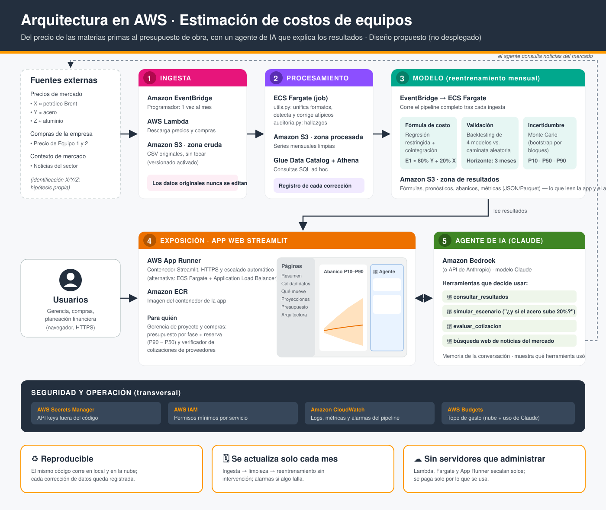

Arquitectura propuesta en AWS
Flujo completo: ingesta → procesamiento → modelo → app web → agente de IA, con seguridad y operación transversales. Diseño propuesto, no desplegado.

Flujo completo: ingesta → procesamiento → modelo → app web → agente de IA, con seguridad y operación transversales. Diseño propuesto, no desplegado.
